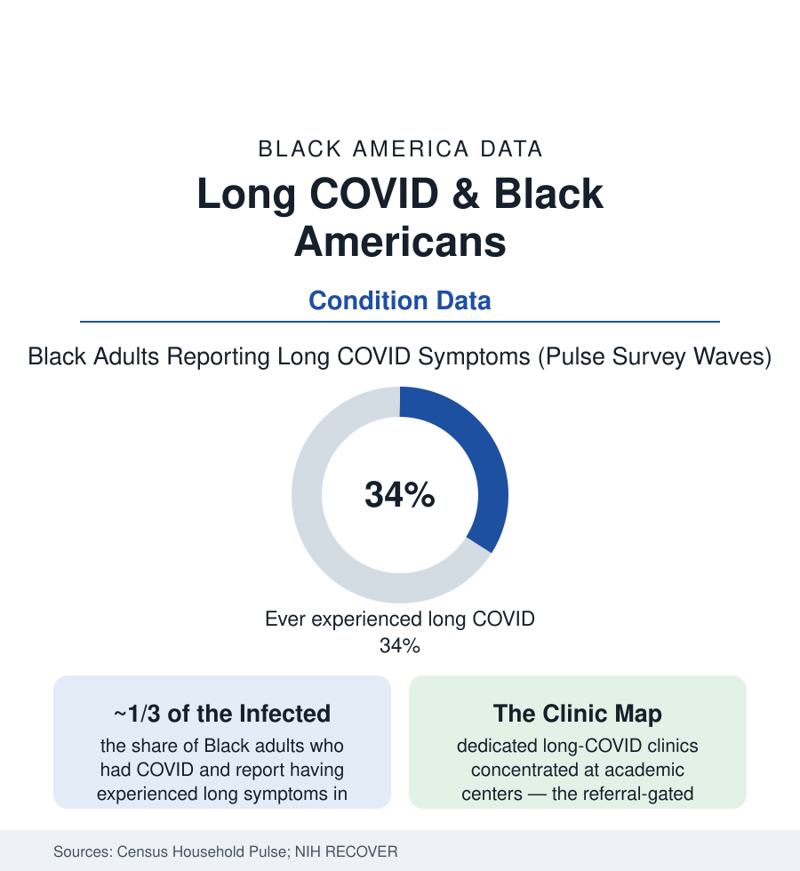

Black Public Health
Long COVID in Black Americans: The Pandemic's Long Tail, Unevenly Carried
Black Americans report long COVID at higher rates in the Census Bureau's pulse surveys — and reach diagnosis and treatment at lower ones. The RECOVER-era data.

The pandemic's acute file closed into a chronic one: long COVID — symptoms persisting months beyond infection, from fatigue and cognitive slowing to organ injury — settled into the population at rates the Census Bureau's Household Pulse Survey has tracked since 2022, and its distribution follows the exposure map that made it. Black adults who had COVID report having experienced long COVID at roughly a third in the pulse waves — among the highest rates of any group — while the diagnosis, the specialty clinic, and the disability accommodation reach them along the gradients this section is built of. This article reads the long tail's data.
Burden: Exposure Compounded Into Chronicity
The burden's arithmetic starts upstream: the acute pandemic's exposure file (the essential-workforce concentration, the household-density file, the early vaccine rollout's gaps) put more infections, and more severe infections, into the Black population — and severity is long COVID's strongest predictor in the cohort data (the hospitalized carrying the highest rates, the ICU survivors' the deepest symptom loads in the RECOVER cohort's phenotyping). The pulse-survey series give the condition its demographic shape: women above men in every group (the autoimmune-adjacent pattern the RECOVER immunology is chasing), the middle-aged above the young, and Black and Hispanic adults at the top of the group table for ever-experienced symptoms — with the current-symptoms rows (the smaller, harder core still limited in daily activities, roughly a fifth to a quarter of the ever-group in the waves) distributing the same way. The condition's measurement argument is itself a file (the definition fights — the National Academies' 2024 definition an attempted settlement — the biomarker absence that makes the diagnosis clinical and therefore gatekept by belief, the survey's self-report against the claims data's coded trickle: the same condition reading at different sizes through different instruments, the disparity conclusions surviving every instrument change).
Recognition: The Diagnosis Gap Inside the Condition
The access data describe the by-now familiar machine in a new clinic: the coded-diagnosis rates in the claims and EHR analyses running below the survey's self-report most steeply for Black patients (the gap between having it and having it written down — the chart as the gateway to everything downstream), the specialty-clinic map (the post-COVID clinics sited overwhelmingly at academic medical centers, referral-gated, wait-listed in months in the programs' own reports — against a patient population drawn from the essential workforce's ZIP codes), the RECOVER cohort's enrollment (the flagship study's diversity better than the trial file's norm by design and still argued over in its own reports), and the symptom-attribution pattern the qualitative literature documents (the fatigue and brain fog of Black women patients re-filed under depression, menopause, and weight in the encounter studies — the pain file's dismissal machinery in its cognitive form). The consequence cascade is mechanical: without the code there is no clinic, no accommodation letter, no disability file — the condition's entire administrative existence downstream of a recognition the data show arriving unevenly.
Work, Disability, and the Economic Tail
The labor data close the file's loop: the pulse survey's work-impact rows (the long-COVID adults reporting reduced hours, exits from employment, and earnings losses at rates the economists' estimates aggregate into the millions of workers affected nationally), the disability system's intake (the SSDI and SSI applications citing post-COVID conditions in the SSA's emerging data — the allowance rates for a condition without a biomarker running through the adjudication file's most skeptical machinery, the representation and denial gradients of the disability file applying), the accommodation data (the long-COVID employee's remote-work and schedule requests in the HR surveys — the pandemic's own flexibility infrastructure, built by the same event, being withdrawn in the return-to-office era on a collision course the employment lawyers' caseloads register), and the household ledger (the OMAD-irrelevant, income-central arithmetic of the census section: the earner slowed is the rent late is the eviction filed — the long tail arriving, as every health file in this atlas arrives, at the housing court's door). The research horizon in the current record: the RECOVER treatment trials (the antivirals, the autonomic and anti-inflammatory candidates — the condition's first real therapeutic pipeline, its enrollment watched by the communities carrying the burden), the reinfection-risk data's prevention argument, and the surveillance question of whether the pulse series' slow decline in current-symptom rates continues — the pandemic's last table, still being written.
Reading the Long COVID Data
A third of the infected reporting the long form, a recognition gap between the symptom and the chart, and a disability system built for injuries it can photograph: long COVID is the health file's newest chapter written in its oldest grammar. The virus did the exposing. Everything since — the clinic map, the code, the accommodation — has been administration. The data keep both halves of that sentence in the same survey, for anyone who reads to the second table.
More in Black Public Health
Hypertension Among Black Adults: Prevalence, Control, and Consequences
About 55 percent of Black adults have hypertension — the highest rate of any U.S. group. Prevalence, onset, control, and the stroke, heart, and kidney consequences in the data.
Diabetes Among Black Adults: Prevalence and Complications
Nearly one in five Black adults has diabetes, diagnosed or undiagnosed — and its complications fall with particular weight. The CDC data on prevalence, control, and outcomes.
Black Life Expectancy: The Gap at Birth and Its Causes
Black life expectancy at birth is about 73 years, roughly five years below the national figure — the summary measure of every health gap in this section. The CDC data.
Source: U.S. Census Bureau Household Pulse Survey; National Institutes of Health RECOVER Initiative; Centers for Disease Control and Prevention; National Academies reports on long COVID.